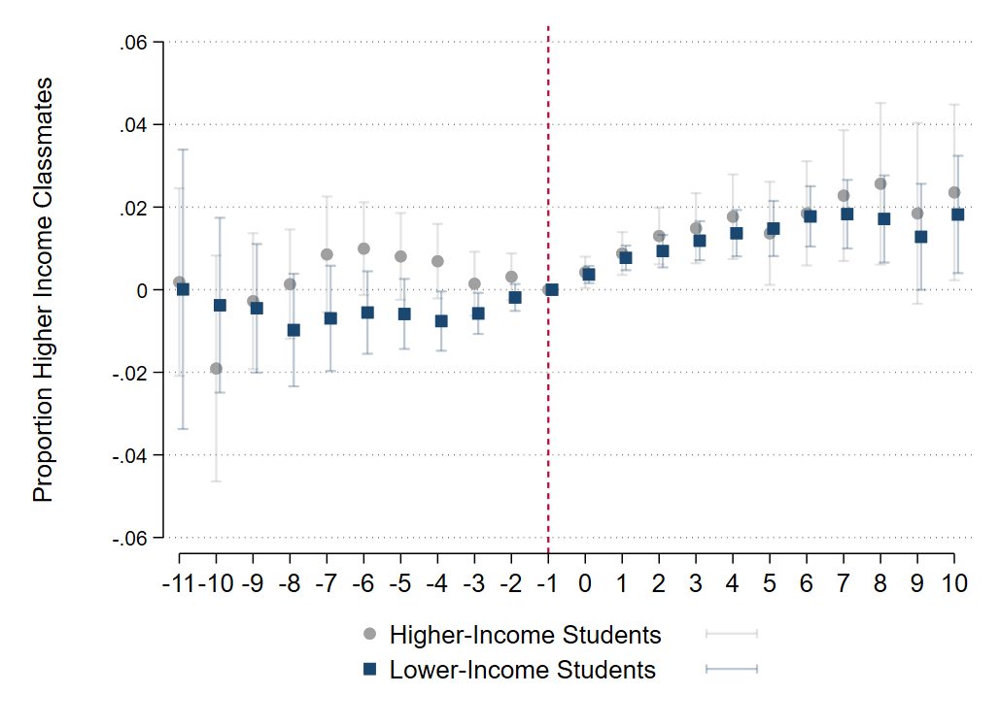

Schools and Social Capital: Economic Segregation and Long-term Outcomes
Abstract
How does k-12 school economic segregation impact lower-income students’ college enrollment and employment prospects? Using data from Texas, I find that the typical (median) lower-income student goes through grades 5 to 12 having 1 in 20 upper-income classmates compared to 1 in 2 for the typical upper-income student. The low exposure to upper-income classmates is mainly driven by residential and school socioeconomic segregation, classroom assignment contributes little. I use within-school residual variation from school trends in the proportion of upper-income students to capture the impact of having a higher share of upper-income peers. I distinguish between two possible explanations for the relationship between exposure to upper-income classmates and long-term outcomes: spillover from peers with higher family income and spillover from higher-achieving peers. The slope of the relationship between the proportion of upper-income peers and college enrollment and wages implies that, in the absence of income segregation, lower-income students' 4-year college enrollment would increase by 0.44 percentage points and their young adult quarterly wages would increase by 1.9%, on average. The impact of exposure to upper-income peers appears to be independent of peer academic achievement.
Cumulative Exposure to Upper-Income Students Between Grades 5 and 12 in Texas

Tracking to Retain Higher-Income Students: Evidence from the Addition of Advanced Courses
Abstract
Tracking in public schools has the potential to reshape classroom and school composition by attracting or retaining upper-income and higher-achieving students. However, tracking could also exacerbate sorting by student income and test scores within schools. To examine how tracking may influence classroom income and test-score composition, I exploit variation in the timing of an Advance Placement (AP) course addition within specific school subjects. I find that the introduction of an AP course does not reduce lower-income students' exposure to upper-income classmates; if anything, it increases their exposure. This increase is driven by a rise in the overall share of upper-income students at the school following the addition of an AP course, offsetting increases in sorting by income. These findings provide new insights into how tracked courses can influence school environments and contribute to the broader understanding of the equity implications of advanced courses.
Impact of AP Coursework on Students' Share of Higher-Income Classmates by Income

The Expansion of Alternative Schools: Impact of Schools Targeting Lower Performing Students
(With Nour Abdul-Razzak and Monica Bhatt)
Abstract
Although US public schools have made substantive progress in reducing the number of students who dropout of high school, there remains a substantial portion of students nationwide every year who do not obtain a high school degree. One strategy to address persistent high school dropout is to provide students with choice and flexibility in their schooling schedules and environments, often done through alternative schools. The expansion of alternative schools presents an interesting case of increased school heterogeneity, increasing the number of schools targeting lower performing students. In this paper, we use the variation in exposure to alternative schools to identify the impact of exposure to alternative schools on persistence, graduation, college enrollment, and arrests.